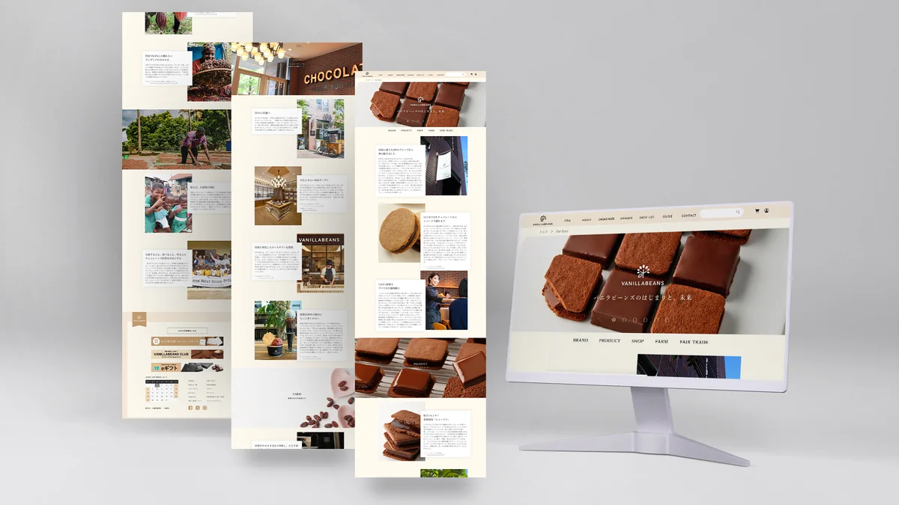
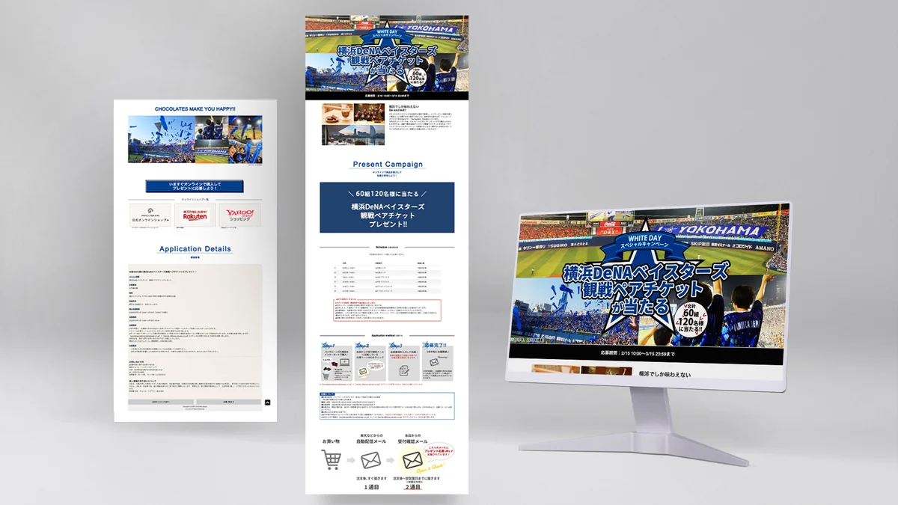
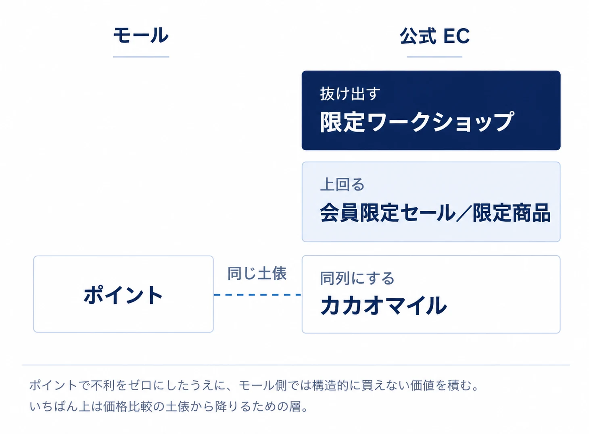
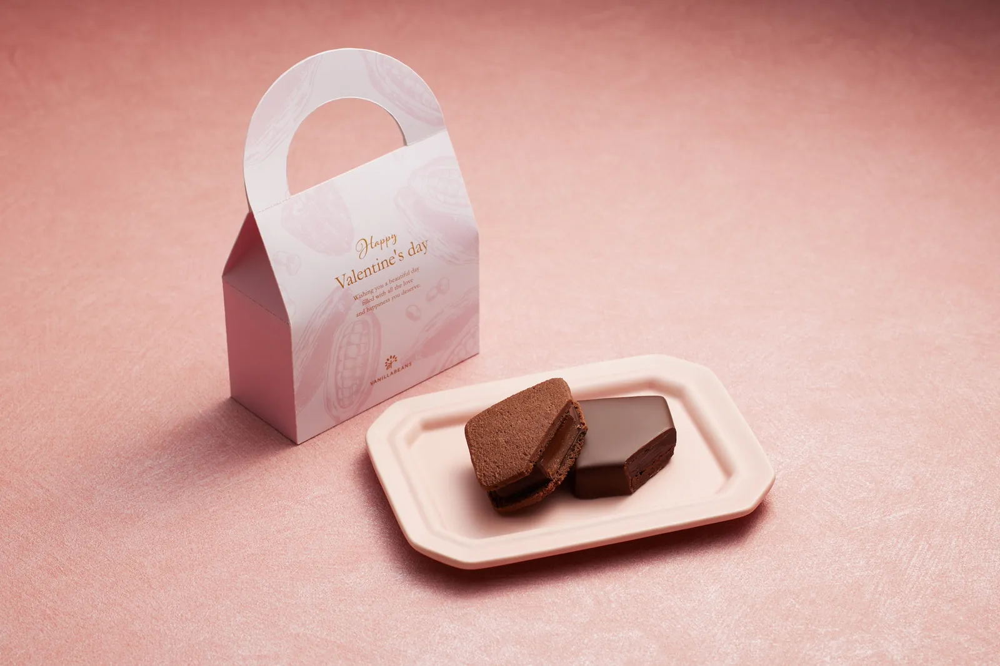
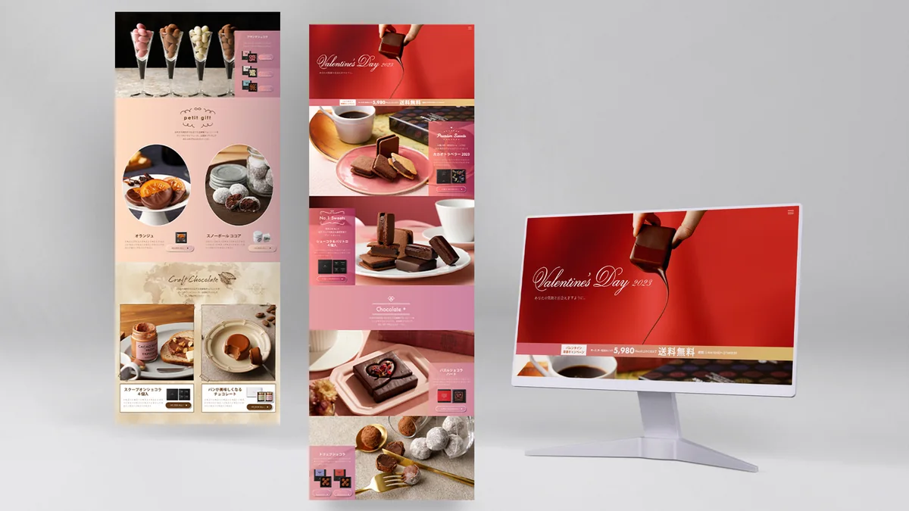
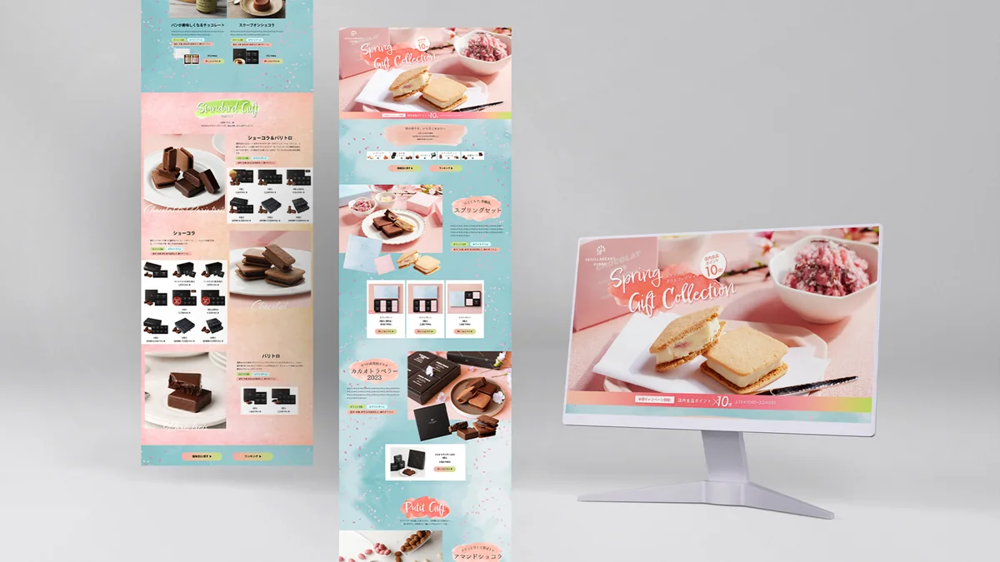

11年間、同じブランドに関わり続けました。
受注電話を取るところから始めて、商品ページをつくり、最後は会員制度や商品企画といった事業の仕組みを設計するところまで。担当するレイヤーは変わりましたが、やっていたことはずっと同じです。顧客が何に困っていて、何を欲しがっているのかを聞き取り、それを形にする。
ここでは、その11年を4つの段階に分けて書きます。
01
顧客対応
2013 - 2015
聞く｜カスタマーサポート
EC の受注業務と顧客対応を担当していました。
毎日、注文の電話とメールを受けます。「包装紙はかかっているのか」「ギフトとして送りたいけれど、相手に金額が分からないようにできるか」「いつ届くのか」「どれを選べばいいか分からない」。そうした声を一日中受け続けていました。
なかでも多かったのが、包装や同梱物についての確認です。ギフトとして買う人は、中身と同じくらい「どう届くか」を気にしている。商品情報だけ充実させても、この不安は解消されません。
このとき気づいたのは、問い合わせの多くはサイトで解決できるはずのものだったということです。情報が見つからない、判断材料が足りない、不安が解消されない。電話がかかってくること自体が、サイトの設計課題でした。
そこで、受けた声をもとにサイトの改善提案を始めました。
成果
この2年間が、後のすべての土台になりました。ユーザーの声を調査で集めたのではなく、仕事として毎日受け取っていた。この経験があるかないかで、その後の設計の解像度がまったく変わったと思っています。
02
画面
2015 - 2020
つくる｜Webデザイン・UI/UX改善
デザイン担当に移り、聞いた声を設計に変換する側になりました。
- LP・商品ページ・バナーの制作
- ユーザー導線設計および UI 改善
- 商品企画・キャンペーン設計への参画
- ブランドサイト・公式 EC リニューアルの推進
前職で受けていた問い合わせが、そのまま改善の材料になりました。「包装紙はかかっているか」なら包装形態を商品ページ内で明示する。「金額を知られたくない」なら明細を同梱しない選択肢を伝える。「どれを選べばいいか分からない」なら価格帯や用途から探せる導線をつくる。問い合わせの多い順に、サイトを直していきました。
いま公式 EC の商品ページを見ると、包装仕様・手提げ袋の有無・領収書の扱いが、どれも本文中で明示されています。ギフト EC における不安の潰し方は、この時期に型ができたものです。
2017年にリーダーへ昇進。制作物をつくるだけでなく、何をどの順でつくるかを決める立場になりました。


この5年間に大きな数字はありません。ただ、ここで積んだ設計の基礎がなければ、次の段階には進めませんでした。
03
事業
2021 - 2024
設計する｜Webマーケティングリーダー
ブランドマーケティング部へ異動し、担当が画面から事業に移ります。
年間の販売戦略・商品企画・キャンペーン企画に参画し、KPI 分析による UX 課題の抽出、ペルソナ設計、カスタマージャーニー構築を担当しました。
この時期に設計した仕組みを2つ書きます。継続をつくるものと、新規を連れてくるものです。
3-1. 会員制度｜継続の設計（2023年4月）
課題
カスタマージャーニーを分析すると、ユーザーが公式 EC ではなく楽天や Yahoo! に流れる傾向が見えました。同じ商品を、わざわざモールで買っている。
仮説
モールにはポイントが貯まる。公式にはそれがない。つまり公式で買う理由が存在しないのではないか。
設計
制度を3つの層で組み立てました。

| 層 | 施策 | ねらい |
|---|---|---|
| 同列にする | ポイント制度（カカオマイル） | モールに対する不利をゼロにする |
| 上回る | 一定額以上でプチスイーツ進呈／会員限定タイムセール／限定商品 | モールでは構造的に実現できない価値を置く |
| 抜け出す | 会員限定ワークショップ | 価格比較の土俵から降り、ファンになってもらう |
ポイントはモールと比較したときに同列になる水準で設計しました。そのうえで、モール側では実現できない体験を積み上げる。
さらに、購入回数に応じて会員ランクが上がり、ランクが上がるほどプレゼントスイーツを獲得できる金額が下がる仕組みにしました。買うほど得になるのではなく、買うほど得やすくなる。継続するほど離れにくくなる構造です。
成果
現在
VANILLABEANS CLUB として現在も稼働中。ポイントは「カカオマイル」として商品ページの購買導線に組み込まれています。
3-2. プチギフトバッグ｜新規獲得の設計（2024年1月）
課題
前年バレンタインのアクセス解析から、単価の安い単品商品へのアクセスが多いことが分かりました。高額なギフトセットではなく、手頃なものが見られている。
分析
3つの方向から裏を取りました。
- 行動データ — 低単価商品へのアクセスが集中している
- 競合分析 — 見た目が可愛く、写真に映えるものがよく売れている
- ユーザーの声 — メジャーではないが美味しいもの、ストーリーがあるもの、友人に自慢できるものが求められている
3つが同じ方向を指していました。贈る人が欲しいのは高級さではなく、渡しやすさと、渡したときの反応だと判断しました。
設計
- 価格を 1,000円以下に設定し、ばらまき用のプレゼントとしても使えるようにする
- 中身は人気商品2種（ショーコラ／パリトロ）の組み合わせ。味の満足度は既存の実績で担保する
- パッケージをミニバッグ型にし、渡した瞬間の印象と写真映えを設計に織り込む

成果
現在
季節ごとにバリエーションを変えながら、定番フォーマットとして販売が継続しています（現行のスプリング版は993円）。商品ページのレビューには、パッケージの可愛さや、贈った相手に喜ばれたことに触れる声が並んでいます。企画時に立てた仮説が、購入者の言葉として返ってきている状態です。
単発の企画が当たったのではなく、繰り返し使える型をつくれたことが、この仕事でいちばん意味のある結果だと考えています。


3-3. 事業全体への影響
継続の設計と新規獲得の設計を同時に走らせた結果が、この数字に表れました。
04
構造
構造をつくる｜カカオ農園支援プロジェクト
立ち上げから企画・推進・商品化設計までを担当しました。
支援を寄付という一方通行の行為にせず、生産者・企業・ユーザーそれぞれの関係が続く構造として設計しています。ユーザーは商品を買う。その体験の中に支援が組み込まれている。生産者には継続的に対価が渡る。企業は物語ではなく事実を語れるようになる。
誰かの善意に依存する仕組みは続きません。関わる全員に利益が残る形にして初めて、支援は継続します。支援活動そのものを、商品体験としてユーザーに届ける仕組みをつくりました。
この11年で身についたこと
聞くことから始めて、つくることを覚え、仕組みを設計するところまで来ました。
そして、つくったものの多くが、私が離れた後も動いています。会員制度も、プチギフトバッグも、現在の運用チームの手で続いている。自分がいなくても回る形にすることが、設計の目的だと考えるようになりました。
いまは BtoB SaaS や業務システムの UI/UX を担当していますが、やっていることは変わりません。使う人の状況を聞き取り、業務の流れを整理し、運用が続く形に落とす。扱う対象が変わっただけです。